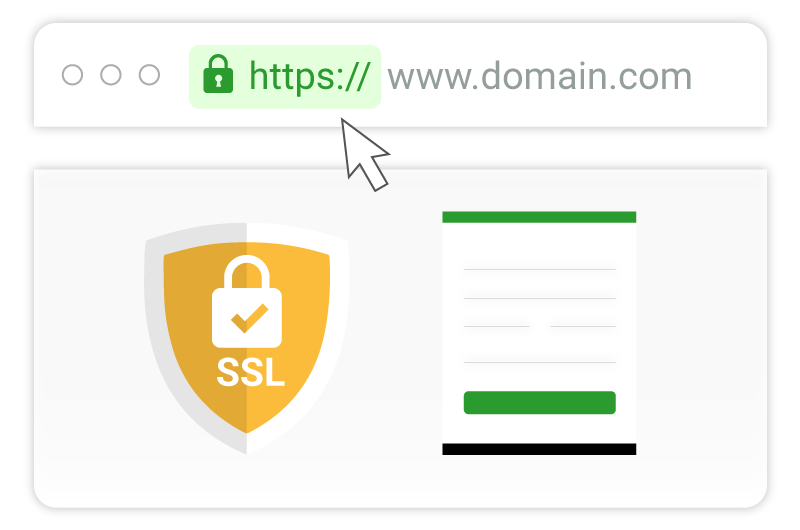
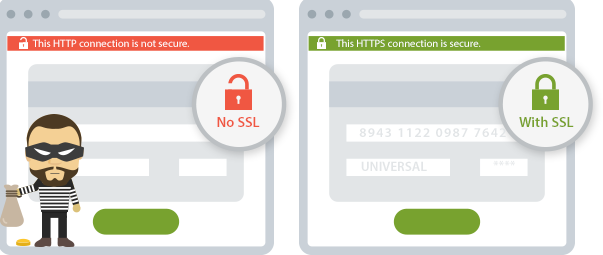
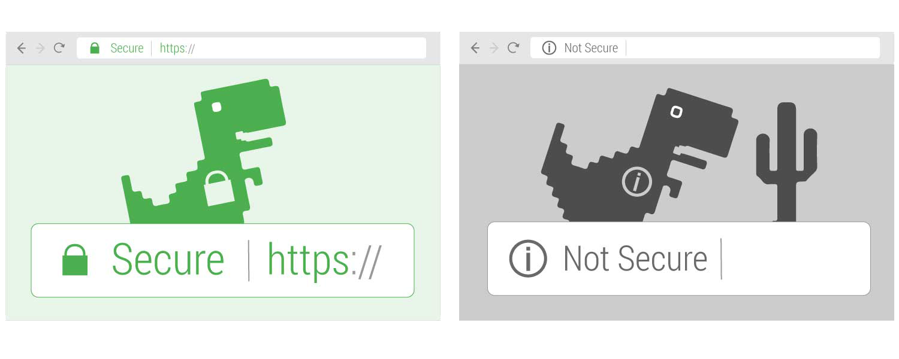
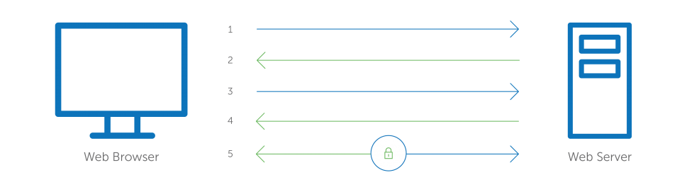

Shahrood university of technology
Farid Froozan - FaridFr.ir
SSL (Secure Sockets Layer) is a standard security protocol for establishing encrypted links between a web server and a browser in an online communication. The usage of SSL technology ensures that all data transmitted between the web server and browser remains encrypted. An SSL certificate is necessary to create SSL connection. You would need to give all details about the identity of your website and your company as and when you choose to activate SSL on your web server. Following this, two cryptographic keys are created - a Private Key and a Public Key.
 The next step is the submission of the CSR (Certificate Signing Request), which is a data file that contains your details as well as your Public Key. The CA (Certification Authority) would then validate your details. Following successful authentication of all details, you will be issued SSL certificate. The newly-issued SSL would be matched to your Private Key. From this point onwards, an encrypted link is established by your web server between your website and the customer's web browser.
 On the apparent level, the presence of an SSL protocol and an encrypted session is indicated by the presence of the lock icon in the address bar. A click on the lock icon displays to a user/customer details about your SSL. It's to be remembered that SSL Certificates are issued to either companies or legally accountable individuals only after proper authentication.
 An SSL Certificate comprises of your domain name, the name of your company and other things like your address, your city, your state and your country. It would also show the expiration date of the SSL plus details of the issuing CA. Whenever a browser initiates a connection with a SSL secured website , it will first retrieve the site's SSL Certificate to check if it's still valid. It's also verified that the CA is one that the browser trusts, and also that the certificate is being used by the website for which it has been issued. If any of these checks fail, a warning will be displayed to the user, indicating that the website is not secured by a valid SSL certificate.
What is SSL used for ?The SSL protocol is used by millions of online business to protect their customers, ensuring their online transactions remain confidential. A web page should use encryption when it expects users to submit confidential data, including personal information, passwords, or credit card details. All web browsers have the ability to interact with secured sites so long as the site's certificate is issued by a trusted CA.
Why do I need SSL certificate?The internet has spawned new global business opportunities for enterprises conducting online commerce. However, that growth has also attracted fraudsters and cyber criminals who are ready to exploit any opportunity to steal consumer bank account numbers and card details. Any moderately skilled hacker can easily intercept and read the traffic unless the connection between a client (e.g. internet browser) and a web server is encrypted.
How Does SSL Work ?The following graphic explains how SSL Certificate works on a website. The process of how an 'SSL handshake' takes place is explained below:
 - Browser connects to a web server (website) secured with SSL (https). Browser requests that the server identify itself.
- Server sends a copy of its SSL Certificate, including the server’s public key.
- Browser checks the certificate root against a list of trusted CAs and that the certificate is unexpired, unrevoked, and that its common name is valid for the website that it is connecting to. If the browser trusts the certificate, it creates, encrypts, and sends back a symmetric session key using the server’s public key.
- Server decrypts the symmetric session key using its private key and sends back an acknowledgement encrypted with the session key to start the encrypted session.
- Server and Browser now encrypt all transmitted data with the session key.
http://parspack.com/sslFree , Domain validation , Organization Validation , Extended Validation
https://pars.host/ssl/dv , ssl wildcard , Multi-Domain , ...
https://www.bertina.ws/ssldv , ov , ev
https://www.cloudflare.com/ssl/free , pro , business , enterprise